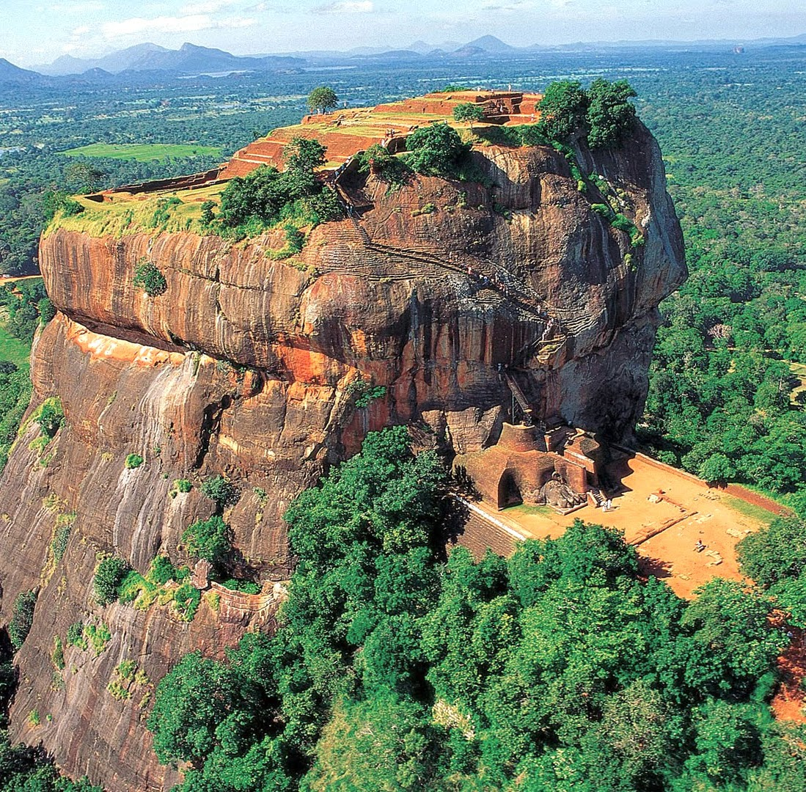

Heritage
Your family walked these ancient paths too. They just didn't know where to look. Priyanwada does.
Heritage

- Duration
- 8 days · 7 nights
- Places
- 20 stops
- Starts
- Pinnawala
- Guide
- Priyanwada Rathnayake
Itinerary
Day by day
Eight days through the Cultural Triangle, the hill capital of Kandy, cave temples and rock carvings, and the colonial south coast.
- Day 1: AirportPinnawalaDambullaSigiriya
- Day 2: HabaranaPolonnaruwaSigiriya
- Day 3: SigiriyaMataleKandy
- Day 4: KandyPeradeniyaNuwara Eliya
- Day 5: Nuwara EliyaEllaBuduruwagalaTissamaharama
- Day 6: TissamaharamaMulkirigalaKoggalaGalleAhungalla
- Day 7: Madu GangaAhungalla
- Day 8: AhungallaInduruwaColomboDeparture
Along the way
Moments from this route
Tap a photo to see it larger.
Plan your journey
Make this journey yours.
Dates, pace and stops can all be adjusted. Send a message with your travel dates and group size.
- Mobile & WhatsApp+94 71 27 27 755
- Emailthenaturalist.lk@gmail.com